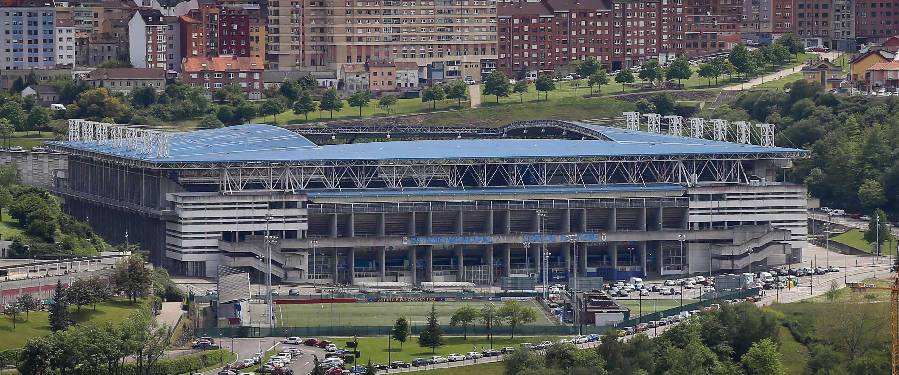
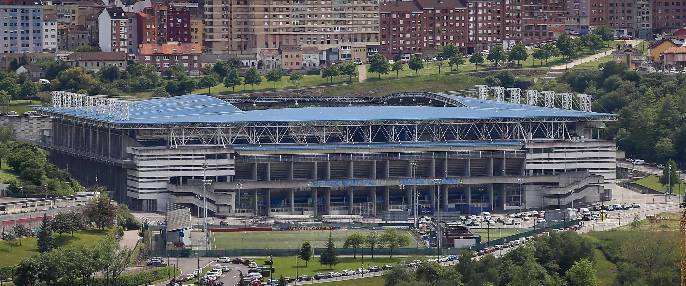

Vídeo del parque que ofrece una vista panorámica de 360º desde el punto de grabación.
Vídeo del parque con vista en 360º
El parque más grande de la ciudad de Oviedo.
 Parque Purificación Tomás
Parque Purificación Tomás
El parque Purificación Tomás es uno de los lugares ideales de la
ciudad para pasear, andar en bicicleta o realizar otras actividades al aire libre.
En él podrás encontrar | Senderismo | Baloncesto | Disc-Golf |
Un lugar ideal para disfrutar del deporte.


Un parque ideal para practicar deporte.
 Deporte en el Parque Purificación Tomás
Deporte en el Parque Purificación Tomás
En el Parque Purificación Tomás se pueden practicar deportes variados como baloncesto, senderismo, mountain-bike o disc-golf. Cuenta con rutas e instalaciones para practicar estos deportes, además de un gimnasio al aire libre.
 

Ejercicio físco al aire libre
 Ventajas
Ventajas
Realizar ejercicio al aire libre tiene múltiples beneficios que van más allá de mejorar el acondicionamiento físico. La actividad física en espacios al aire libre tiene un mayor impacto en el bienestar mental que la realizada en espacios cerrados.
Esto se debe a varios factores como la luz solar, el aire fresco (beneficioso para el cerebro), mayor adherencia a la práctica física y un aumento del gasto calórico.
Ejercicio físico al aire libre
 Recomendaciones
Recomendaciones
Para realizar ejercicio de forma segura, es recomendable tener en cuenta el clima, ropa térmica para el frío y protector solar y gafas de sol para los días de calor, sin olvidar que tanto el calor como el frío extremo pueden ser peligrosos.
Calienta antes de entrenar, evita los días en los que haya mucha contaminación y por último estira adecuadamente tras el ejercicio. Si vas a realizar deporte de noche o cerca de lugares por donde circulan coches, utiliza ropa que refleje.
Explora las Otras Zonas Verdes de Oviedo

Descubre tu refugio natural en Oviedo, explora los diversos oasis y remansos de paz que la ciudad tiene para ofrecer.
Al igual que en los parques, en estas zonas verdes podrás encontrar diferentes ACTIVIDADES


Inaugurado en 2014, se
convirtió en el
primer campo de dieciocho hoyos del país. Este campo ofrece una
experiencia única, combinando la mitad de los hoyos en áreas abiertas y
la otra
mitad en zonas boscosas. Club
Disc Golf - OVIEDO


Recinto polideportivo
al aire
libre y bajo techo, cuenta con una serie de máquinas homologadas con las
que se pueden realizar diferentes tipos de ejercicios físicos: tren superior, tren
inferior y cardio.

Cancha
reglamentaria
de baloncesto urbano, el campo de juego es un rectángulo de dimensiones 28 m x
15
m medidos desde el borde interior de las líneas que lo delimitan.
Espacio verde activo
 Disfruta el deporteal aire libre
Disfruta el deporteal aire libre
Practicar deporte es fundamental para mantener una buena salud física y mental, ya que ayuda a prevenir enfermedades, mejora tu estado de ánimo y aumenta la energía diaria, hacerlo al aire libre ayuda a eliminar el estrés, mejora los estados de ánimos y brinda la sensación de libertad que usualmente no se tiene en un cuarto cerrado.
Explora y Disfruta
 Deporte y Actividades en Purificación Tomás
Deporte y Actividades en Purificación Tomás
Cuenta con varias instalaciones, como
canchas polideportivas, una pista de voleibol y
una pista de bicicletas. Además, es conocido por ser el escenario
del Martes de Campo, una festividad popular que suele celebrarse a
finales de Mayo.
También se celebran eventos importantes como el Open de Disc Golf de
Oviedo.
Sobre Nosotros
Somos un equipo de desarrolladores web dedicados a crear experiencias únicas.
Nos
esforzamos por transformar la visita a los parques por excelencia de Oviedo en experiencias
digitales visualmente atractivas, intuitivas y fáciles de usar.
© Copyright 2025.
Todos los derechos reservados.